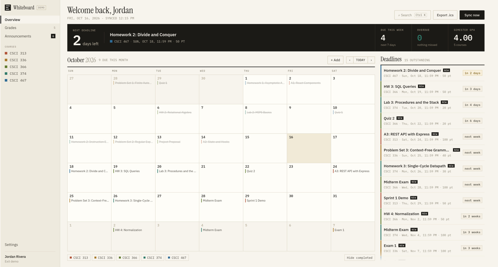

Whiteboard
Blackboard Learn keeps due dates, grades, announcements and course files on separate pages for each course, so finding out what is due this week means opening every class in turn. Whiteboard brings it together in one view: upcoming deadlines across all courses, a calendar that exports to other apps, weighted grades, and search across assignments, announcements and the text of handouts you have opened.

- Runs
- In the browser
- No server
- Requests
- GET only
- Read-only by design
- Stored in
- IndexedDB
- Nothing leaves your machine
How it works
The app runs entirely in the browser and caches what it fetches in IndexedDB, so there is no server and no data leaves the user's machine. A small Manifest V3 extension for Chrome and Firefox is the only part that talks to Blackboard, using the session the browser already has. It only permits GET requests to Blackboard's REST API, so the app cannot submit or change anything.
Grades and Claude
Blackboard doesn't expose how much each grade category is worth, so grades are weighted by points until the user enters the percentages from the syllabus. The Claude tab connects to the user's local Claude Code install through a native messaging host. Claude runs with its built-in tools disabled and can only use tools the page provides, which read course data and let it write study notes and quizzes for the page to display. It has no file or shell access and cannot change anything in Blackboard.
Whiteboard is unofficial and not affiliated with Anthology.